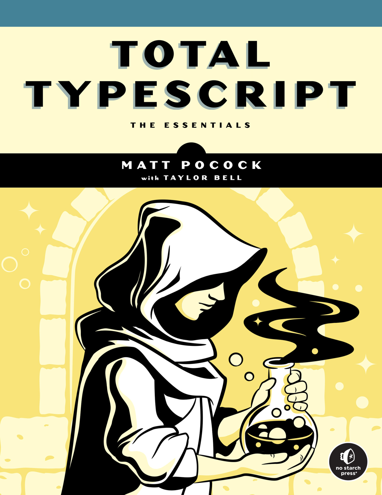

type DeepReadonly<T> = ...T extends U ? X : Yconst x = { ... } as constconfig satisfies AppConfig

Интерактивная книга · Полка TypeScript
Total & TypeScript
Исчерпывающее практическое руководство от Мэтта Покока: от автодополнения в IDE и базовых типов до дженериков, условных типов и архитектуры продвинутых утилит.